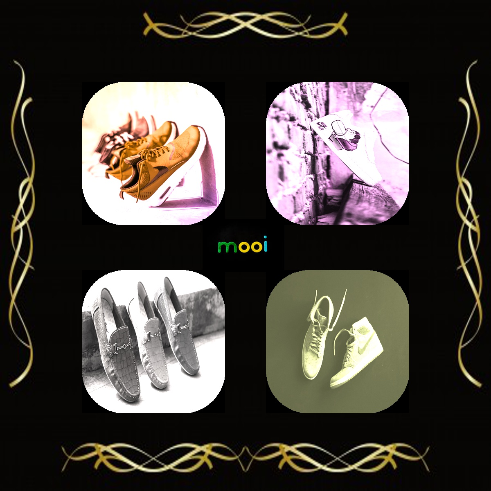

Scratch Project
My scratch project
This was our very first project in CSP and it was a remixed version of flappy bird. We started this project in the beginning of our school year in September 2019.I worked with my partner Youssef. We both had the same roles in where we coded and aslo did the logs. Our toughest challenge was to figure out how to make the game faster and make it tough but not to a point where it is impossible. In doing so I learned how to make a game more manageable and easier to use.
MIT APP INVENTOR
My Project

My next project was our MIT app inventor project. We did this in October. My roal in this project was to code for the colors and the line. We remixed a tutorial and make a pictionary of it. I learned how to layout apps and the formatting. Our hardest challenge was time. With our idea wanted to do much more such as changing our dots to lines but we didn't have enough time.
Escape Room Project
This by far was my favorite project and was a lot of fun. In this project I was tasked to come up with puzzles and code them out. We worked on this project in January of 2020. This was a project which took us a lot of thinking and bringing in a lot of our creativity. We wanted to make this as challenging as possible and fun at the same time. One of our biggest challenges was implementing our original idea of having a secret code. We wanted to use the Ceaser Cypher in which the code shifts the alphabet a certain amount of spaces and rearranges the entire alphabet. This was a challenge we couldn't overcome due to it being very precise and time consuming to code and we didn't have that kind of time.
Image Manipulation Project

In this project we manipulated images and changed them using python. My partner Shreyas and I did this in April. The concept of this project was to make a advertisment for a brand of our choice and we made it on shoes. When making this project my biggest struggle was how to change these pictures but still make them eye appealing. This impacted the way we changed each image from rgb to its size. Communication was key in this project. Unlike my other projects in this project we were at home at couldn't work at school. That made this even more tough because both of us had to call and make sure to keep in touch. It helped me build that communication skills and keeping in touch skill.